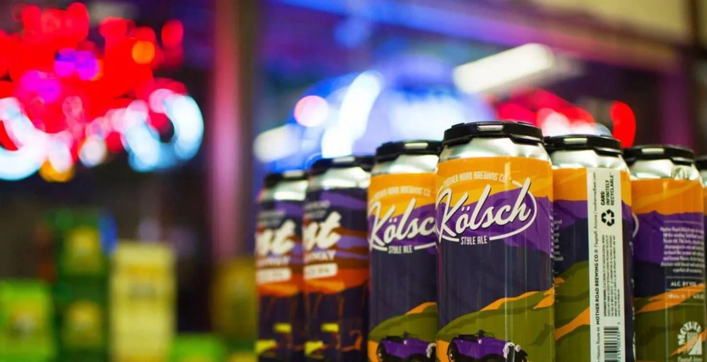
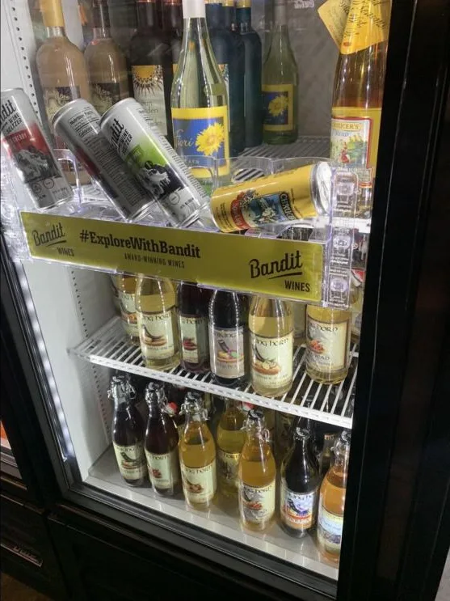

Flagstaff & Arizona craft
We keep plenty of Arizona craft beer cold, from Mother Road on Route 66 to Four Peaks and whatever the local breweries just canned. Ask what’s new.
Open daily from 9 AM
Aisle 3
A wall of cold coolers you can walk right down: Arizona craft, the big names, hard seltzer, canned cocktails, cider, mead and sake. Grab a case on your way to the lake.


We keep plenty of Arizona craft beer cold, from Mother Road on Route 66 to Four Peaks and whatever the local breweries just canned. Ask what’s new.
The big names, ice cold and ready to go by the six-pack, twelve-pack or case.
Margaritas, mules, spritzes and seltzers, already mixed and cold. Easy for the lake, the trail and the tailgate.

The fun corner of the cooler: hard cider, honey mead, canned wine and even Arizona-made sake.
Bags of ice from the freezer out front, plus the mixers and odds and ends you forgot to buy at the grocery store.

Call ahead with how many cases you need and we’ll let you know what’s cold and on hand.